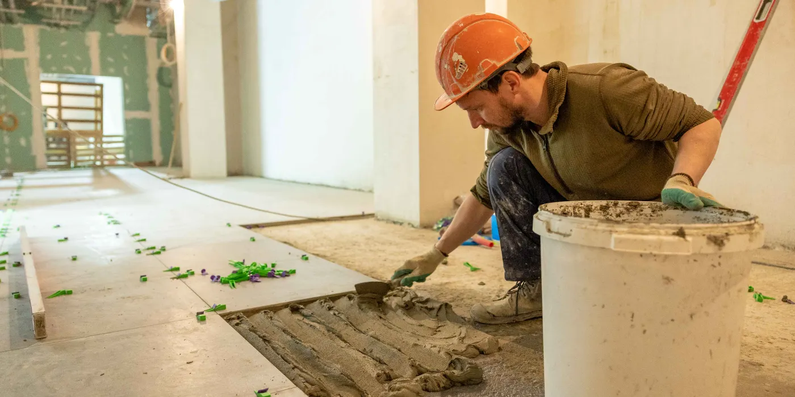
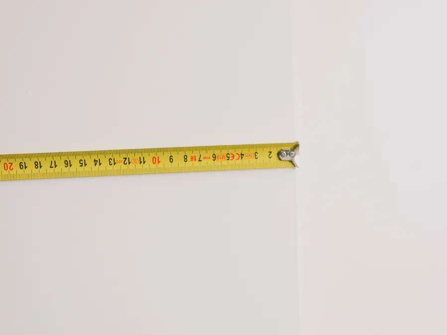
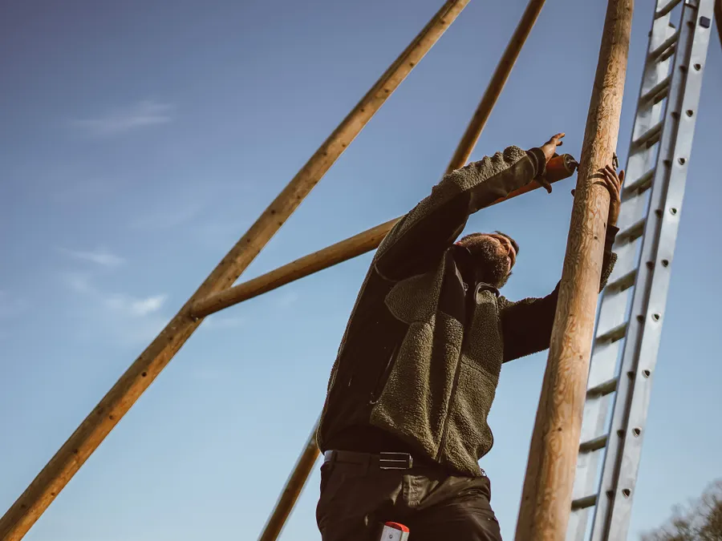

Tillbyggnad & utbyggnad
När huset behöver mer yta mot trädgården eller ovanpå garaget. Vi tar bygglov, konstruktionsberäkning, grund, stomme, tak och inredning med samma lag.
Läs mer
Sex tjänster · Stockholm · verksamma sedan 2004
Tillbyggnad, badrum, kök, vindsinredning, fasad och altan. En namngiven arbetsledare följer projektet från besiktning till slutbesiktning, och priset är fast innan första spadtaget.
Priserna är kr per m² utan moms för entreprenad i Stockholm 2026. Intervallet är ett riktmärke: efter besiktning lämnar vi fast pris på din yta och din standard.
| Tjänst | kr/m² | Typisk yta | Tidsplan | Sida |
|---|---|---|---|---|
| Tillbyggnad | 19 000–28 000 | 15–45 m² | 8–16 veckor | Läs om tillbyggnad |
| Badrum | 17 000–30 000 | 4–10 m² | 4–8 veckor | Läs om badrum |
| Kök | 14 000–26 000 | 8–20 m² | 3–6 veckor | Läs om kök |
| Vindsinredning | 12 000–21 000 | 15–60 m² | 5–10 veckor | Läs om vindsinredning |
| Fasad och puts | 1 600–3 400 | 80–300 m² | 3–9 veckor | Läs om fasad |
| Altan och uteplats | 3 800–7 200 | 8–60 m² | 1–3 veckor | Läs om altan |
Ändringar beställs skriftligt innan de utförs. Tre av våra senaste projekt: badrum 6,5 m² i Bromma 178 000 kr på 6 veckor, kök 14 m² på Östermalm 295 000 kr på 5 veckor, altan 46 m² i Nacka 260 000 kr på 3 veckor.
Varje tjänst har eget prisläge, egen tidsplan och egna frågor som måste lösas innan bygget startar. Läs sidan som passar ditt projekt.
När huset behöver mer yta mot trädgården eller ovanpå garaget. Vi tar bygglov, konstruktionsberäkning, grund, stomme, tak och inredning med samma lag.
Läs merEtt badrum blir aldrig bättre än sitt tätskikt. Sara Öberg är Säkra Vatten-behörig och dokumenterar tätskiktet med foto i varje steg innan kaklet läggs.
Läs merKöket ställer högst krav på el och vatten. Vi drar egna grupper, flyttar avlopp och monterar stommar, bänkskiva och vitvaror.
Läs merEn vind på 40 m² blir sovrum, arbetsrum eller extra badrum utan att huset växer. Vi kontrollerar takstolar och bjälklag innan isoleringen går in.
Läs merFasaden tar mest stryk av väder och vind. Vi tvättar, lagar sprickor och lägger puts eller träpanel innan grundning och målning.
Läs merTrallen håller bara så länge grunden under den gör det. Vi gjuter plintar eller platta, bygger regelverk och lägger trall i trä eller komposit.
Läs merDe flesta projekt hamnar i fel kategori först. Tre frågor avgör vilken tjänst du ska läsa på om.
Mät upp ytan och skriv ner vilka rum som påverkas. En vindsinredning på 42 m² i Vasastan landade på 640 000 kr, medan samma summa på fasad räcker till 210 m² på Södermalm. Ytan avgör priset mer än materialvalet gör.
Kök kräver nya elgrupper, badrum kräver tätskikt och fasad kräver ställning. Till vindsinredning tillkommer en trappa på 45 000–90 000 kr om huset inte har en. Ta med det i kalkylen från början.
Vi bokar besiktning inom 5 arbetsdagar och lämnar skriftligt förslag inom 24 timmar på vardagar. Då jämför du fasta priser i stället för grova uppskattningar.

Vilken av de sex tjänsterna du än väljer gäller samma åtta punkter i avtalet.
Det här ingår inte: bygglovsavgifter till staden, vitvaror och beslag som du köper själv, samt arbete på sådant som ligger utanför avtalad yta. Vi skriver ut det i förslaget så att slutsumman stämmer med första siffran.

Samma fyra steg gäller för ett badrum på 6,5 m² och för en tillbyggnad på 28 m². Det som skiljer är tiden och antalet hantverkare.
Byggmästare Mikael Lindqvist går igenom ytan, stommen och var el och vatten ligger. Du får svar på vad som går att göra innan någon räknar på kostnaden.
Kalkylatorn räknar yta och standard, arbetsledaren kontrollerar siffrorna mot platsen. Förslaget listar vad som ingår och vad som tillkommer, rad för rad.
Arbetslaget skyddar golv och trapphus, städar varje fredag och dokumenterar tätskikt och rördragning med foto. Jour vardagar 17:00–21:00 gäller för pågående projekt.
Vi går igenom arbetet tillsammans med dig och skriver protokoll på plats. Anmärkningar åtgärdas, och garantin löper i 5 år enligt AB 04.
Frågorna vi får oftast innan en besiktning är bokad.
Riktmärket är 19 000–28 000 kr/m² för tillbyggnad, 17 000–30 000 kr/m² för badrum, 14 000–26 000 kr/m² för kök, 12 000–21 000 kr/m² för vindsinredning, 1 600–3 400 kr/m² för fasad och 3 800–7 200 kr/m² för altan. Alla priser är utan moms.
Intervallet beror på yta, standard och hur mycket el och VVS som behöver flyttas. Efter besiktning lämnar vi fast pris.
Nej. Beskriv projektet med egna ord, till exempel att övervåningen är kall och att ni vill ha ett sovrum där. Vi avgör om det är vindsinredning, isolering eller en tillbyggnad som löser problemet.
Får vi fel uppdrag av oss själva rättar vi det innan förslaget skrivs.
Besiktning bokar vi inom 5 arbetsdagar och det skriftliga förslaget kommer inom 24 timmar på vardagar. Badrum och kök startar oftast 2–4 veckor efter att materialet är beställt.
Tillbyggnad och fasad väntar på bygglov respektive väder, så där räknar vi med längre framförhållning.
Beskriv projektet i formuläret. Vi läser igenom, bokar en kostnadsfri besiktning och återkommer med fast pris och tidplan.
312 projekt sedan 2004 · snittbetyg 4,8 av 5 över 63 omdömen · 5 års garanti enligt AB 04